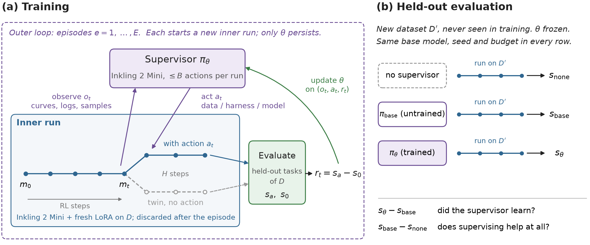

Teaching a model to babysit its own training runs: the data
Introduction
This is a running log of small scale experimentation to build a model that supervises post-training and improves the outcomes of underlying RL runs through intervention across data, harness, and model.
Specfically, the model watches a live RL post-training run, forecasts where the run is going, finds what is wrong, and changes it. The test here is a run with this model end better than the same run without it. The outer loop learns from inner RL runs and when applied to a new RL posttraining environment, it performs better than the baseline model.
The model I am experimenting with is Inkling 2 Mini. The runs it watches are RL post-training runs of Inkling 2 Mini, on miles, on one GPU. So it watches over runs of itself, and what it learns goes back into the same weights. The experimental setups follows AutoRL where the watching agents are API models that are not trained (gpt-6.1-sol and glm-5.2).

The reward for the supervisor model is initialy designed to capture the improvement over counterfactual trajectory (e.g. what if the intervention hadn’t been made).
Warm-up: the skills a supervisor needs
To supervise a training run well, a model first needs a few skills. It has to see where a run is going, see what is wrong with it, and write the fix. Each skill is a task with an answer we can check offline, without a live run. In the warm-up stage (Figure 1, a-i) the model trains on these tasks with RL. The supervision stage then starts from these weights.
| Skill | The question | What the model hands in | Datasets |
|---|---|---|---|
| Predict | How will this run turn out? | a forecast: a curve, a final number, or which of two runs wins | Tea Leaves |
| Read | What went wrong in this run, and how do you fix it? | a diagnosis, or one edit to the run | AutoRLBench, RFT-FaultBench |
| Build | Can you write the piece that makes training better? | code: a loss, an estimator, a library feature | HF_ML_Tasksmith, AutoResearchExam, DiscoGen |
Each dataset has tasks for training and tasks held back for testing. A model never trains on a test task. All datasets I looked at, and why most were left out, are in the appendix.
One rule sets the cost of checking an answer: how much of a real training run do we execute to know that the answer was right?
We also chose the tasks to be fast. An RL run needs many attempts per step, so a slow task makes every step slow and costly. We kept tasks where one experiment takes a few minutes, whatever budget the dataset shipped with. Every attempt has a turn limit of 128 and a time limit.
| Dataset | Median time of one attempt by Inkling 2 Mini | Time limit |
|---|---|---|
| RFT-FaultBench | 3 min | 30 min |
| AutoRLBench, diagnosis | 4 min | 30 min |
| AutoRLBench, repair | 7 min | 30 min |
| HF_ML_Tasksmith | 7 min | 30 min |
| DiscoGen | 18 min | 30 min |
| AutoResearchExam | 29 min, measured under a 30-minute limit | 60 min now |
Some datasets ship much longer budgets. AutoResearchExam ships 24 hours per task, and we run it at 60 minutes. RSI Bench gives the agent 1.5 to 12 hours per task, so it stays a test.
Predict
The model sees the start of a training run and forecasts the rest. This is the cheapest skill to train, and the one a supervisor uses before every change: “if I do this, where does the run end?”
- Given: the first 20% of a training curve, with the run’s settings, description and code.
- Hands in: a forecast of the rest of the curve.
- Checked by: comparing the forecast with what the run did.
- GPU: none.
- Cost of one check: one model call.
Train on:
| Dataset | What it holds | Size |
|---|---|---|
| Tea Leaves, training file (paper, data) | logged runs: pretraining, fine-tuning and RL | 918 runs |
Test on:
| Dataset | What it holds | Size |
|---|---|---|
| Tea Leaves, test runs (same links) | runs the model has never seen | 682 runs, 150 of them RL |
The Tea Leaves paper says that knowing a part of training has three levels: describing it, implementing it, and anticipating what it does to a run. Models are usually asked for the first two. This job needs the third.
Read
The model reads what a run left behind and says what went wrong. Sometimes it also fixes the run. This is the skill a supervisor uses most: before it can change a run, it has to see the problem.
- Given: the logs, config and code of a finished RL run.
- Hands in: a diagnosis, or one edit to the run.
- Checked by: comparing the diagnosis with the known cause, or by running the training again with the edit.
- GPU: none for diagnosis. For repair, only in the grader’s box: the model edits files, and the grader reruns the training.
- Cost of one check: about $0.05 for a diagnosis; $0.19 to $0.94 for a repair on CPU; about $2.50 to $4.50 for a repair with a GPU rerun.
Train on:
| Dataset | What one task is | Tasks |
|---|---|---|
| AutoRLBench, diagnosis (repo) | read a real failed RL run; name the cause, with evidence | 40 |
| AutoRLBench, repair (same repo) | edit the failed run once; a rerun decides whether the fix worked | 3 |
| RFT-FaultBench (paper, data) | read the telemetry of an RL fine-tuning run; say if it is healthy, and if not, which fault it has | 146, not split yet |
Test on:
| Dataset | What one task is | Tasks |
|---|---|---|
| AutoRLBench, diagnosis, held out | the same kind of task | 10 |
| AutoRLBench, repair with a GPU rerun | the same kind of task, on longer runs | 5 |
| AgenticRL-Bench (repo, Kaggle) | audit or repair a real RL pipeline | 22 |
Build
The model writes a piece of training code and sees whether it helps. This is the research-engineering part of the job: when the supervisor decides that a run needs a new loss or a fixed library function, it has to write it.
- Given: working code with a part to write or improve.
- Hands in: code.
- Checked by: hidden tests, or a grader that trains with the code on data the model never saw.
- GPU: none for the library tasks. For the others, in the model’s box and in the grader’s box, because the model runs small trainings to try its ideas.
- Cost of one check: $0.10 to about $1.20 on CPU or a small GPU; $2.30 to $3.30 on an H100.
Train on:
| Dataset | What one task is | Tasks |
|---|---|---|
| HF_ML_Tasksmith (data) | implement a merged pull request in trl, peft, accelerate, diffusers or transformers | 11 |
| AutoResearchExam (repo) | improve a research result (an estimator, an encoder, an RL trainer); submit, see a validation score, improve | 15 |
| DiscoGen (paper, repo) | rewrite the loss, optimizer or network of PPO, DQN or an image classifier | 17 |
Test on:
| Dataset | What one task is | Tasks |
|---|---|---|
| Held-out tasks of the three sets above | the same kinds of task | 4 + 3 + 3 |
| RSI Bench, from Scale (repo) | long research tasks: post-training, data, architecture, systems | 49 |
Three more AutoResearchExam tasks run on a small GPU. We checked them, but they are not in the pool yet.
In a DiscoGen attempt, 82 to 96% of the time is spent inside a training command. So the GPU is busy, and four attempts that share one GPU have to wait for each other.
The supervision run
The warm-up tasks are offline. To learn supervision itself, the model needs real post-training runs to watch. For these runs I use short post-training tasks, for two reasons: my budget is small, and a short run gives feedback quickly.
What the inner run trains on
| Dataset | What one run is | Why it fits |
|---|---|---|
| DAPO-Math-17K (AutoRL paper) | RL on 17,390 math problems, scored by answer match | AutoRL trains its Qwen runs on it, so the results can be compared |
| RSI-Dojo (paper, data) | post-train a model toward one target benchmark | 85 of its 281 targets fit a short cycle; one cycle took 17 minutes and $0.57 in a probe with Qwen3-1.7B |
With RSI-Dojo, the training runs use some targets (\(D\)) and the held-out evaluation uses others (\(D'\)). Each target comes with an evaluation script and no training recipe, so the recipe and the reward are mine. In two targets, BoolQ and MedQA, the training and evaluation rows overlap; they need a fix or must be dropped. Which dataset to start with is still open.
What the supervisor sees and changes
The setup is close to AutoRL’s. The supervisor reads the state of the run and may change three parts of it.
| What | |
|---|---|
| Reads | training metrics per step (reward, KL, entropy, response length, step time); rollout trajectories with their rewards; held-out scores at each checkpoint; the run’s config; its own earlier actions in this run and their effect; the actions left in its budget |
| Changes the code | the training code in miles: loss, advantage, sampling, learning rate |
| Changes the harness | the agent harness, OpenCode: prompt, tools, turn and time limits |
| Changes the data | which tasks, in what order, and how they are graded |
It may also do nothing. Doing nothing is an action like the others, and it is scored the same way.
When it acts
For a first proof of concept, the supervisor acts only at step boundaries: after the weight sync and before the next rollouts. The run pauses, the supervisor reads and decides, and the run continues. This keeps things simple, because every decision point is a saved checkpoint, and a twin run can start from it. This is the setup in Figure 1: the fork starts at checkpoint \(m_t\).
Supervising inside a step, for example stopping bad rollouts while they run, would give more decision points and denser feedback. It would also need a way to copy the run in the middle of a step. I leave it for later.
Tests on longer runs
These post-training benchmarks are too long to train on. They test whether the trained supervisor helps on runs much longer than the ones it learned from.
| Dataset | What one task is | Tasks |
|---|---|---|
| PostTrainBench (repo) | post-train a base LLM for one of six benchmarks, 10 hours on one H100 | not counted yet |
| FrontierRSI (repo) | improve a training recipe, RL data, inference speed or a GPU kernel | 8 public |
| RL post-training of Olmo-3-7B (Harbor Hub) | improve an RL recipe on math under a fixed budget of episodes | 1 |
Three tasks up close
Read, from RFT-FaultBench. The model gets the per-step logs of an RL run: reward, KL, entropy, response length, and sampled answers. Some runs are healthy. Others had a fault injected, such as a reward that collapses or an advantage with the wrong sign. The model writes a short answer in this shape (the values are only an example):
{"status": "anomalous", "fault_family": "credit_assignment", "fault_type": "advantage_instability",
"evidence": "what in the logs shows it"}A program grades it: 0 for the wrong status, more for the right family, full marks for the right type.
Build, from DiscoGen. The model gets a working PPO trainer. Only loss.py is editable. It can run training on two games to see how its loss does. When it stops, the grader trains with its loss on two other games it never saw, and compares with the standard loss.
A supervision run, from RSI-Dojo. The inner run gets a base model and a target benchmark. It trains, then a grader evaluates the checkpoint on 300 held-out rows. In our timing test, one 15-minute fine-tune plus the evaluation took about 17 minutes on one small GPU and cost about $0.57.
How Inkling 2 Mini did on a first try
We ran the untrained model on a few tasks from each set, mostly to find out whether the tasks work.
- It thinks every run is broken. On RFT-FaultBench it called all four healthy runs anomalous. Its mean score was 0.42. A simple statistical baseline that is given reference healthy runs scores 0.53. Mini did not have those reference runs, so the two numbers do not compare like for like.
- It repaired one failed run in twelve tries. Fixing a run is much harder than describing what is wrong with it.
- Its new loss functions often made training worse. On DiscoGen, 3 of 6 attempts scored below the unmodified baseline, and only 1 clearly beat it.
- It solved 14 of 36 library tasks on every attempt. Those tasks teach nothing, so we removed them.
That is the right shape for training tasks: some too easy, some too hard, most in between.
What comes next
Figure 1 shows the setup. These points are still open:
- The inner-run dataset. DAPO-Math-17K or RSI-Dojo targets.
- The first actions. Which changes to code, harness and data the supervisor gets first.
- The numbers. The budget of actions per run, the length \(H\) of a twin run, the price of an action, and how often a “do nothing” decision gets a twin.
- Supervising inside a step. Denser feedback, at the cost of copying a run mid-step.
Appendix: every dataset we read
We looked at about 175 datasets and benchmarks. Many we judged from the paper or the dataset card. The candidates we read task by task.
Kept
Test only: the owners ask that it is not used for training
- RSI Bench, AgenticRL-Bench, AutoLab, Accelerate Bench, HPCAgent-Bench, MLGym-Bench, cpu2gpu, leakbench, Auditing Sabotage Bench, FrontierCS 2, Terminal-Bench
Test only: too long or too costly to train on
Outside our domain
The score can be forged, or the answers leak
The tasks do not work as tasks
Too long per attempt
Too heavy to obtain or build
Duplicates or low priority
Not RL
General software and terminal tasks, outside our scope
- SWE-rebench, R2E-Gym, SETA, TMax, smol-software-harbor, and about 15 others